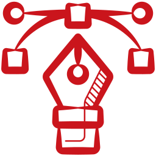

About
...cat /summary/Professional_Summary.txtProfile Summary
Accomplished Python DevOps Engineer with 3+ years of expertise in cloud infrastructure management, automation, and full-stack development. Transitioned from a background in Mechanical Engineering, driven by a strong passion for technology and continuous learning, resulting in a versatile, highly adaptable professional profile.
Proficient in Python, SQL, and major cloud platforms: AWS, Azure, and GCP. Delivering optimized cloud management solutions and implementing DevSecOps practices. Specialized in developing CI/CD pipelines using Jenkins, Docker, and Kubernetes, enabling automated deployments with Ansible and enhancing scalability through Git version control.
Skilled in Infrastructure as Code (IaC) with Terraform and Ansible, along with configuration management, server management, and virtualization within Agile methodologies. Expertise in automation scripting, debugging, and troubleshooting. Maximizing efficiency by automating testing workflows with Selenium, Pytest, and Unittest. Conducting ETL testing with Databricks and PySpark, along with API testing using Postman.
Full-stack development experience includes backend frameworks like Django and Flask, as well as frontend technologies such as React and JavaScript. Proven track record in data management, delivering large dataset solutions that improved reporting accuracy by 30% through data warehousing and performance tuning.
Recognized for reducing deployment times by 25%, improving test coverage by 50%, and providing impactful solutions for disaster recovery, load balancing, and security compliance in the telecom, insurance, and pharmaceutical industries.
Work Experience
...cat /work/Professional_Experience.txtDevOps Lead - Infosys
Liberty Global
June 2023 – Present
- Spearheaded DevOps initiatives in a telecom networking project, improving deployment efficiency by 25% through streamlined CI/CD pipelines and Infrastructure as Code (IaC) using Terraform and Ansible for broadband, video, and mobile services.
- Collaborated with cross-functional teams across 6 countries (UK, Slovakia, Ireland, Netherlands, Poland, Switzerland), enhancing service reliability and customer satisfaction through effective communication and problem-solving.
- Managed the complete lifecycle of Change Requests (CRQs) using JIRA, achieving a 30% reduction in issue resolution time through efficient triaging and stakeholder engagement.
- Oversaw pre- and post-deployment activities, implementing monitoring solutions with Grafana and Kibana to adhere to analytics and observability best practices.
- Automated log handling and data manipulation using Python and Unix/Bash/Linux scripting, reducing manual workload by 40% and improving data accuracy.
- Generated comprehensive deployment status reports, fostering transparency and effective communication among stakeholders, resulting in a 20% increase in collaboration.
- Executed boot file creation for 6 international teams ahead of schedule through Linux administration, achieving heightened efficiency.
- Ensured compliance with company standards and security best practices in cloud environments while monitoring system health and developing/documenting REST APIs using the Swagger tool.
DevOps Engineer - Infosys
Everest Global Services
Nov 2022 – June 2023
- Led automation of infrastructure provisioning and configuration management across AWS and Azure, ensuring optimal resource utilization and security compliance. Developed deployment pipelines using Jenkins and Docker, enabling continuous delivery of applications while maintaining high standards of quality and efficiency.
- Utilized Databricks and PySpark on Azure for data analysis and processing, driving data-informed decisions and improving reporting accuracy by 30%.
- Implemented Infrastructure as Code (IaC) strategies with Terraform and Ansible, streamlining resource management and reducing deployment times.
- Configured AWS VPC and RDS for enhanced performance and isolation, ensuring high availability of applications.
- Engaged in troubleshooting and optimizing infrastructure, implementing monitoring solutions for early detection of issues and improving system reliability.
Python Full Stack Developer & Automation Tester - Infosys
Teva Pharmaceuticals USA, Inc.
Jan 2022 – Oct 2022
- Developed scalable web application features for the pharmaceutical sector using Python, Django, FastAPI, and Flask, ensuring high performance and regulatory compliance. Implemented RESTful APIs for seamless integration with front-end technologies (HTML, CSS, JavaScript, React, Tailwind, Bootstrap) and managed ORM Libraries with SQL Server. Demonstrated strong knowledge of System Design concepts, OOPS, design patterns, and data structures.
- Led automation testing initiatives with frameworks like Selenium, PyTest, Unittest, and Jenkins, achieving a 95% pass rate and improving efficiency by 50%. Executed automated tests using QTest for test case management and conducted API testing via Postman. Implemented DevOps practices in CI/CD pipelines, optimizing deployment processes and reducing deployment time by 30%. Conducted Sprint Integration Testing (SIT) within Agile methodologies, fostering continuous feedback.
- Utilized SQL and NoSQL databases (PostgreSQL, MongoDB) for effective data management and leveraged Databricks and PySpark on Azure for analyzing large datasets, improving reporting accuracy by 30%. Ensured data integrity through ETL testing and promoted secure development practices to minimize manual intervention, enhancing software security and reliability.
Web Designer and Tutor (Part-Time)
Anudip Foundation
Apr 2021 – Jul 2021
- Designed and developed responsive websites using HTML, CSS, JavaScript, and React, optimizing web performance.
- Trained students on web design best practices, achieving a 95% trainee completion success rate.
Senior Graphics Designer (Freelancer/Part-Time)
DigiM Marketing Agency
Dec 2019 – Mar 2020
- Led design projects for promotional ads and UI/UX, enhancing brand engagement by 20%.
- Collaborated with marketing teams, boosting website traffic and user satisfaction through targeted design solutions.
Graphic Designer (Freelancer/Part-Time)
ASRONE Group
Sep 2019 – Dec 2019
- Created digital ads, posters, and vector artworks, enhancing brand identity and increasing engagement across social platforms by 15%.
Skills & Competencies
...cat /skills/Skills_&_Competencies.txt-
 DevOps: CI/CD, Automation, Infrastructure as Code (IaC)
DevOps: CI/CD, Automation, Infrastructure as Code (IaC)
-
 Cloud Platforms: AWS, Azure, Google Cloud Platform (GCP)
Cloud Platforms: AWS, Azure, Google Cloud Platform (GCP)
-
 SRE: Monitoring, Incident Management, Reliability Engineering
SRE: Monitoring, Incident Management, Reliability Engineering
-
 Programming Languages: Python, Bash, JavaScript
Programming Languages: Python, Bash, JavaScript
- Web Dev: HTML, CSS, JavaScript, Node.js, React
-
 Monitoring Tools: Prometheus, Grafana, ELK Stack
Monitoring Tools: Prometheus, Grafana, ELK Stack
-  Visual Design: Adobe Creative Suite
Tools & Technologies
...cat /skills/Tools_&_Technologies.txt-
 Operating Systems: Linux (Ubuntu, CentOS), Windows
Operating Systems: Linux (Ubuntu, CentOS), Windows
-
 CI/CD: Jenkins, Travis CI, CircleCI
CI/CD: Jenkins, Travis CI, CircleCI
-
 Containerization: Docker, Kubernetes
Containerization: Docker, Kubernetes
- Python: Scripting, Automation, Data Analysis
-
 Infrastructure as Code: Terraform, Ansible, CloudFormation
Infrastructure as Code: Terraform, Ansible, CloudFormation
-
 Version Control: Git, GitLab, GitHub
Version Control: Git, GitLab, GitHub
-
 Databases: MySQL, PostgreSQL, MongoDB
Databases: MySQL, PostgreSQL, MongoDB
Education
...cat /education/Education.txtBachelor of Technology in Mechanical Engineering
Andhra University — Visakhapatnam, Andhra Pradesh
Graduated: May 2022
Diploma in Web Designing & Development
Anudip Foundation — Visakhapatnam, Andhra Pradesh
Apr 2021 – Jul 2021
Accomplishments
...cat /achievements/Accomplishments.txt- Awarded the prestigious bumper prize for certified "GCP DevOps Professional" at the Infosys Google Cloud Ignite event, recognizing exceptional expertise and contributions to cloud development.
- Honored with the bumper prize for certified "AWS DevOps Professional" at the Infosys AWS Elevate Days event, highlighting proficiency in cloud automation and infrastructure.